# fraction of random points inside the unit circle, times 4
mc_pi <- function(n) {
xy <- matrix(runif(2 * n, -1, 1), ncol = 2)
incircle <- rowSums(xy^2) <= 1
sum(incircle) / n * 4
}
set.seed(1)
mc_pi(10^4)[1] 3.1224Monte Carlo methods are numerical algorithms built on random sampling (Metropolis and Ulam 1949). Instead of solving a problem exactly, we draw many random samples and let the law of large numbers do the work: an average over the samples approaches the quantity we want as the sample size grows. This chapter introduces the idea through a few simple examples, estimating \(\pi\) two different ways and computing integrals by sampling.
A classic Monte Carlo exercise estimates \(\pi\) from areas. Draw points uniformly in the square \(-1 \le x, y \le 1\) and count the fraction that land inside the unit circle centered at the origin. That fraction \(P\) is the ratio of the circle’s area to the square’s area,
\[ P = \frac{\pi r^2}{(2r)^2} = \frac{\pi}{4} , \tag{1} \]
so we can estimate \(\pi\) as
\[ \pi = 4 P . \tag{2} \]
Objective. Estimate pi by Monte Carlo sampling of a circle’s area.
Model. The fraction of uniform points in the square [-1, 1]^2 that fall inside the unit circle is pi/4, so pi = 4*P.
Method. Monte Carlo estimation of pi by area sampling (the fraction of uniform points inside the unit circle, times four).
Test. Uniform points in [-1, 1]^2; a single estimate at n = 1e4 and a convergence run to n = 1e5; seed 1.
Show. The running estimate of pi versus sample count, and a scatter of the sampled points in and out of the circle.
Verification. The estimate is noticeably off at n = 1e4 but settles near pi by n = 1e5, showing the slow 1/sqrt(n) Monte Carlo convergence.
# fraction of random points inside the unit circle, times 4
mc_pi <- function(n) {
xy <- matrix(runif(2 * n, -1, 1), ncol = 2)
incircle <- rowSums(xy^2) <= 1
sum(incircle) / n * 4
}
set.seed(1)
mc_pi(10^4)[1] 3.1224# running estimate as the sample size grows (cumulative fraction)
mc_pi_sample <- function(n) {
xy <- matrix(runif(2 * n, -1, 1), ncol = 2)
incircle <- rowSums(xy^2) <= 1
cumsum(incircle) / (1:n) * 4
}
n <- 10^5
plot(1:n, mc_pi_sample(n), type = "l", xlab = "n", ylab = "Estimation", log = "x")
abline(h = pi, col = 2, lty = 3)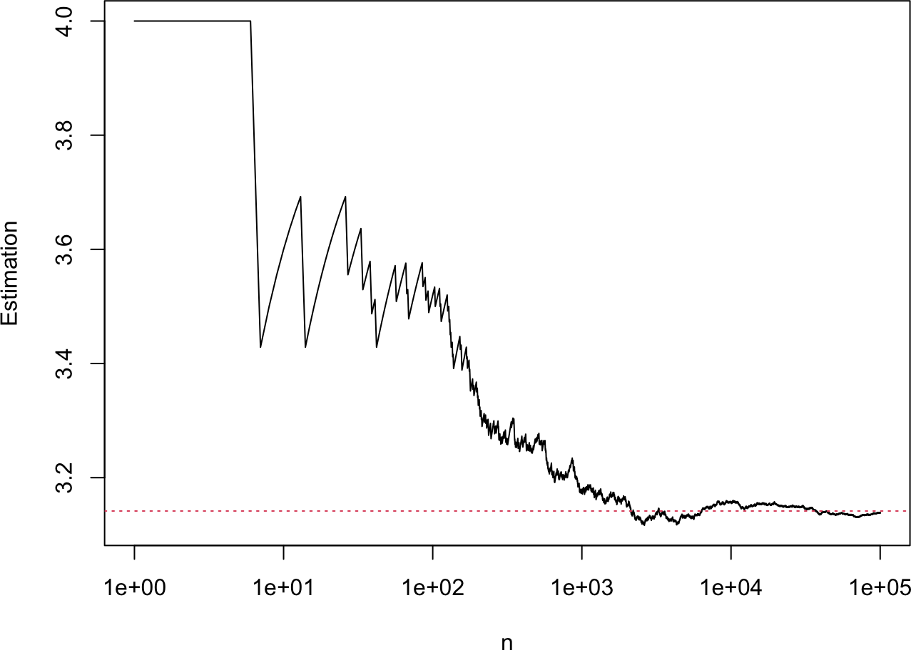
# the sampled points, colored by whether they fall inside the circle
library(ggplot2)
n <- 10^4
xy <- matrix(runif(2 * n, -1, 1), ncol = 2)
incircle <- rowSums(xy^2) <= 1
mc_data <- data.frame(x = xy[, 1], y = xy[, 2], incircle = incircle)
ggplot(mc_data, aes(x, y, col = incircle)) + geom_point(size = 0.3) + coord_fixed()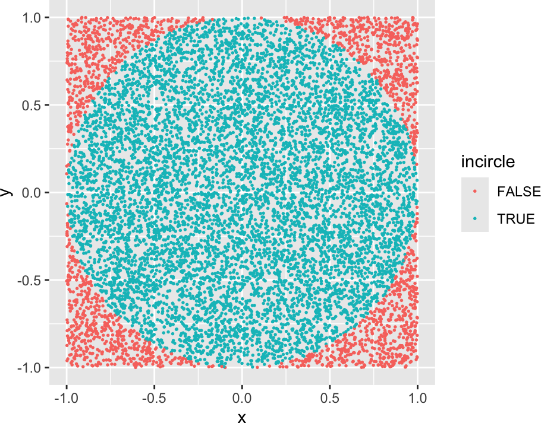
import numpy as np
import matplotlib.pyplot as plt
# fraction of random points inside the unit circle, times 4
def mc_pi(n):
xy = np.random.uniform(-1, 1, size=(n, 2))
incircle = np.sum(xy**2, axis=1) <= 1
return np.sum(incircle) / n * 4
np.random.seed(1)
print(mc_pi(10**4))3.1436# running estimate as the sample size grows (cumulative fraction)
def mc_pi_sample(n):
xy = np.random.uniform(-1, 1, size=(n, 2))
incircle = np.sum(xy**2, axis=1) <= 1
return np.cumsum(incircle) / np.arange(1, n + 1) * 4
n = 10**5
plt.plot(np.arange(1, n + 1), mc_pi_sample(n))
plt.axhline(np.pi, color="red", linestyle=":")
plt.xscale("log"); plt.xlabel("n"); plt.ylabel("Estimation"); plt.show()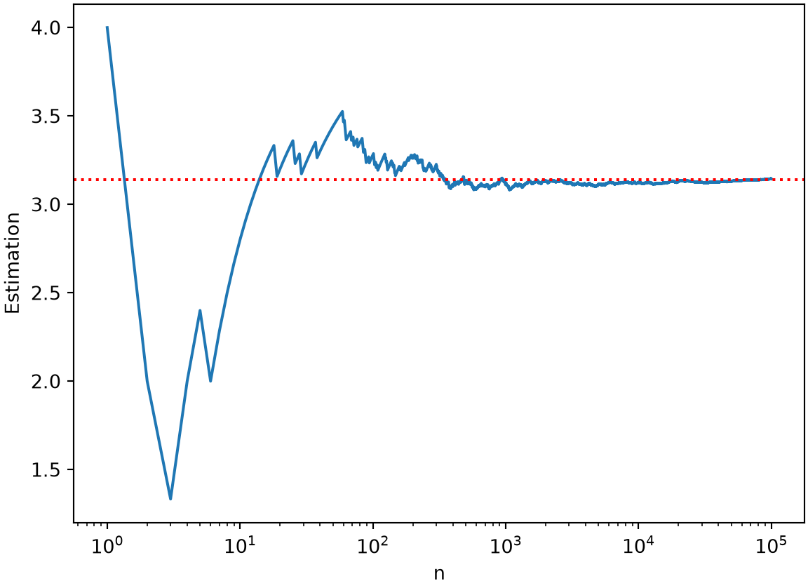
# the sampled points, colored by whether they fall inside the circle
np.random.seed(1)
n = 10**4
xy = np.random.uniform(-1, 1, size=(n, 2))
incircle = np.sum(xy**2, axis=1) <= 1
plt.figure(figsize=(5, 5))
plt.scatter(xy[:, 0], xy[:, 1], c=incircle, cmap="viridis", s=3)
plt.gca().set_aspect("equal")
plt.xlabel("x"); plt.ylabel("y"); plt.show()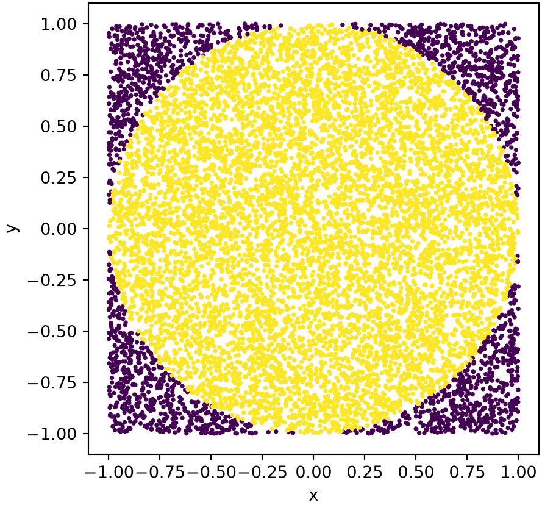
With \(n = 10^4\) samples the estimate is close but noticeably off; by \(n \sim 10^5\) it settles near the true value. The running-estimate plot shows the slow convergence typical of Monte Carlo methods: the error shrinks only as \(1/\sqrt{n}\), so each extra digit of accuracy costs a hundredfold more samples. Because R and Python draw from different random streams, their estimates differ slightly while following the same trend.
A second, very different route to \(\pi\) is Buffon’s needle problem (Buffon 1777). Drop a needle of length \(l\) onto a floor ruled with parallel lines a distance \(d\) apart. As long as \(l < d\), the probability that the needle crosses a line is
\[ P = \frac{2 l}{\pi d} , \tag{3} \]
so measuring \(P\) gives an estimate of \(\pi\),
\[ \pi = \frac{2 l}{P d} . \tag{4} \]
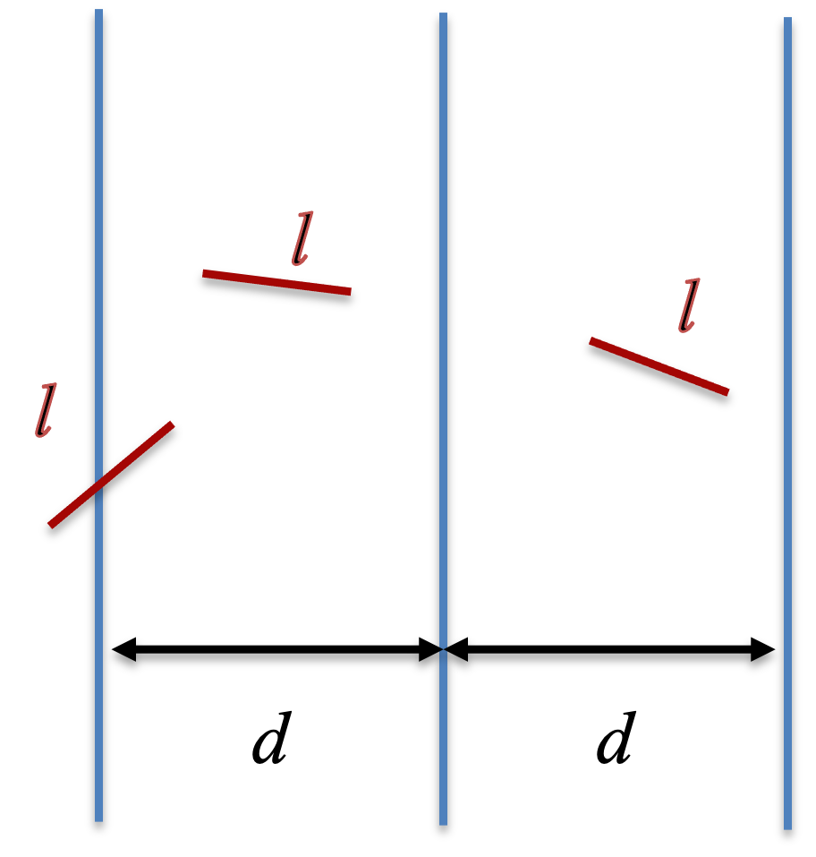
To simulate one drop, we place vertical lines at \(x = 0\) and \(x = d\) and sample the \(x\) coordinate \(x_1\) of one end of the needle uniformly in \((0, d)\). We then need a uniformly random direction. Sampling a point \((x_2, y_2)\) in the square and keeping it only if it falls inside the unit circle (rejecting otherwise) gives a direction \((x_2, y_2)/\sqrt{x_2^2 + y_2^2}\) that is uniform in angle. The other end of the needle then has
\[ x_3 = x_1 + l \frac{x_2}{\sqrt{x_2^2 + y_2^2}} , \tag{5} \]
and the needle crosses a line when \(x_3\) falls outside \((0, d)\), that is when
\[ x_3 (d - x_3) \le 0 . \tag{6} \]
Objective. Estimate pi with Buffon’s needle experiment.
Model. Dropping a needle of length l on a floor ruled with lines a distance d apart (l < d) crosses a line with probability 2*l/(pi*d), so pi = 2*l/(P*d).
Method. Buffon’s needle Monte Carlo estimation of pi, using rejection sampling for a uniform random needle direction.
Test. Line spacing d = 1, needle lengths l = 0.2, 0.4, ..., 1.4; n = 1e4 then n = 1e5 drops; seed 1.
Show. The estimate of pi for each needle length, versus sample count.
Verification. At n = 1e4 the estimate wanders around pi (and breaks for l > d), and n = 1e5 tightens it.
# one needle drop: TRUE if it crosses a line
needle_drop <- function(d, l) {
x1 <- runif(1, 0, d) # one end of the needle
repeat { # rejection sampling for a uniform direction
x2 <- runif(2, -1, 1)
r2 <- x2[1]^2 + x2[2]^2
if (r2 <= 1) break
}
x3 <- x1 + x2[1] / sqrt(r2) * l # the other end
x3 * (d - x3) <= 0
}
# crossing probability from n drops
buffon <- function(n, d, l) mean(replicate(n, needle_drop(d, l)))
set.seed(1)
d <- 1; l <- seq(0.2, 1.4, by = 0.2)
p <- sapply(l, function(len) buffon(10^4, d, len))
plot(l, 2 / p * l / d, type = "b", xlab = "l", ylab = "Estimation", main = "n = 10^4")
abline(h = pi, col = 2, lty = 3)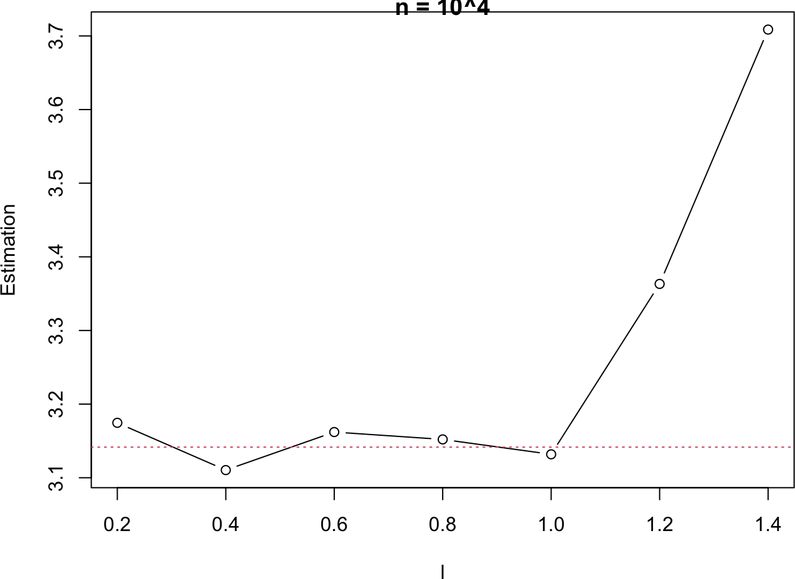
set.seed(1)
p <- sapply(l, function(len) buffon(10^5, d, len))
plot(l, 2 / p * l / d, type = "b", xlab = "l", ylab = "Estimation", main = "n = 10^5")
abline(h = pi, col = 2, lty = 3)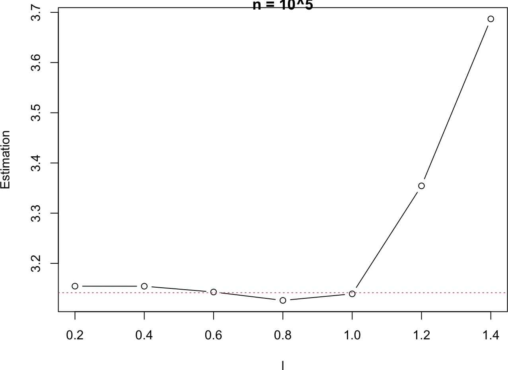
# one needle drop: True if it crosses a line
def needle_drop(d, l):
x1 = np.random.uniform(0, d) # one end of the needle
while True: # rejection sampling for a uniform direction
x2 = np.random.uniform(-1, 1, size=2)
r2 = np.sum(x2**2)
if r2 <= 1:
break
x3 = x1 + x2[0] / np.sqrt(r2) * l # the other end
return x3 * (d - x3) <= 0
# crossing probability from n drops
def buffon(n, d, l):
return np.mean([needle_drop(d, l) for _ in range(n)])
np.random.seed(1)
d = 1; l = np.arange(0.2, 1.5, 0.2)
p = np.array([buffon(10**4, d, length) for length in l])
plt.plot(l, 2 / p * l / d, "o-"); plt.axhline(np.pi, color="red", linestyle=":")
plt.xlabel("l"); plt.ylabel("Estimation"); plt.title("n = 10^4"); plt.show()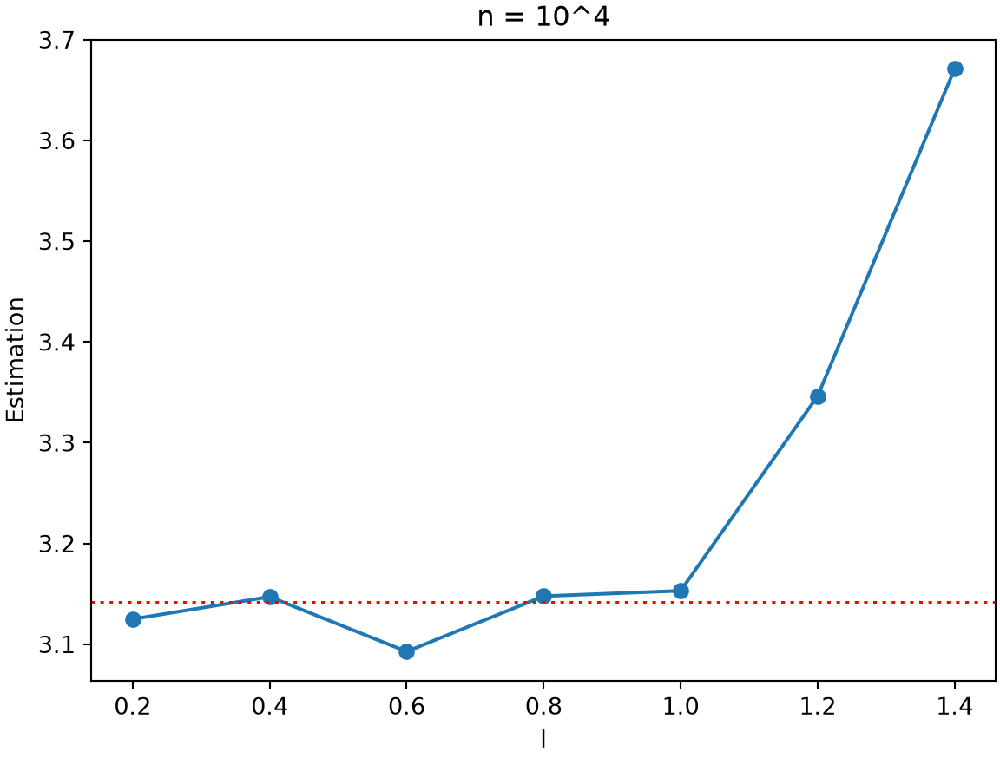
np.random.seed(1)
p = np.array([buffon(10**5, d, length) for length in l])
plt.plot(l, 2 / p * l / d, "o-"); plt.axhline(np.pi, color="red", linestyle=":")
plt.xlabel("l"); plt.ylabel("Estimation"); plt.title("n = 10^5"); plt.show()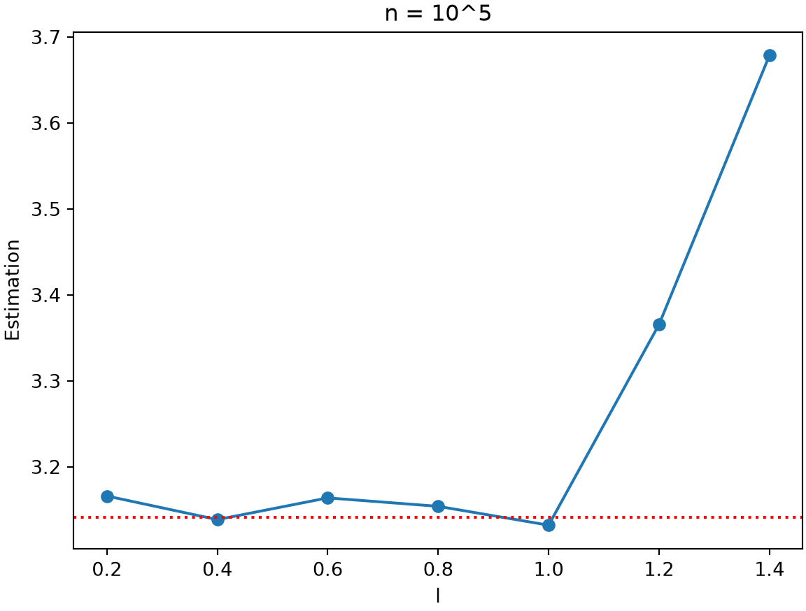
At \(n = 10^4\) the estimate still wanders around \(\pi\), and it worsens for \(l > d\), where Equations (3) and (4) no longer hold. Raising the count to \(n = 10^5\) tightens it considerably. Buffon’s needle is an intuitive estimator but a slow one. The rejection step matters: sampling the direction directly from a uniform angle would be simpler, but drawing \((x_2, y_2)\) in the square without rejecting the corners would bias the angle away from uniform and spoil the estimate.
Monte Carlo sampling also evaluates integrals. As a reference, the ordinary midpoint rule splits \([x_1, x_2]\) into \(n\) equal intervals and sums the integrand at the interval midpoints,
\[ I = \int_{x_1}^{x_2} f(x)\, dx \approx \sum_{i=1}^n f(m_i)\, \Delta x . \tag{7} \]
We test it on \(f(x) = e^{-x^2}\), whose integral from 0 to \(\infty\) is known exactly,
\[ I = \int_0^{\infty} e^{-x^2}\, dx = \frac{\sqrt{\pi}}{2} , \tag{8} \]
approximating it over \(x_1 = 0\) to \(x_2 = 3\). The Monte Carlo version instead draws \(x\) uniformly in \((x_1, x_2)\) and averages,
\[ I \approx \frac{x_2 - x_1}{n} \sum_{i=1}^n f(x_i) , \tag{9} \]
where the prefactor \((x_2 - x_1)/n\) plays the role of \(\Delta x\).
Objective. Integrate a function by Monte Carlo sampling and compare it to a deterministic rule.
Model. The integral of f(x) = exp(-x^2); the reference is the midpoint rule, and the exact value over [0, inf) is sqrt(pi)/2.
Method. Monte Carlo integration by uniform sampling, I = (x2 - x1)/n * sum f(x_i), alongside the deterministic midpoint rule.
Test. Interval [0, 3]; midpoint rule at n = 1000, Monte Carlo at n = 1e4; seed 1.
Show. The midpoint-rule and Monte Carlo estimates against sqrt(pi)/2.
Verification. Both land near sqrt(pi)/2 = 0.886; the midpoint rule is more accurate for this smooth 1D integrand, but Monte Carlo’s error is dimension-independent.
# deterministic midpoint rule
midpoint <- function(f, x1, x2, n) {
dx <- (x2 - x1) / n
mid <- seq(x1 + dx / 2, x2 - dx / 2, by = dx)
sum(f(mid)) * dx
}
f1 <- function(x) exp(-x^2)
midpoint(f1, 0, 3, 1000)[1] 0.8862073# where uniform random samples land under the curve, for n = 10 and n = 100
par(mfrow = c(1, 2), mar = c(4, 4, 2, 1))
xall <- seq(0, 3, by = 0.01)
for (n in c(10, 100)) {
set.seed(1)
plot(xall, f1(xall), type = "l", xlab = "x", ylab = "f", main = paste("n =", n))
for (x in runif(n, 0, 3)) segments(x, 0, x, f1(x), col = 2)
}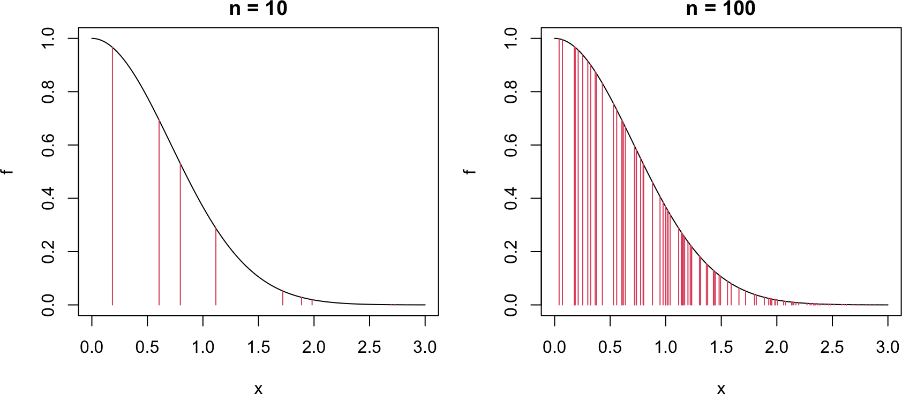
# Monte Carlo integration by uniform sampling
mc_integration <- function(f, x1, x2, n) {
x <- runif(n, x1, x2)
sum(f(x)) * (x2 - x1) / n
}
set.seed(1)
mc_integration(f1, 0, 3, 10^4)[1] 0.8913834# deterministic midpoint rule
def midpoint(f, x1, x2, n):
dx = (x2 - x1) / n
mid = np.arange(x1 + dx / 2, x2, dx)
return np.sum(f(mid)) * dx
def f1(x):
return np.exp(-x**2)
print(midpoint(f1, 0, 3, 1000))0.8862073485371911# where uniform random samples land under the curve, for n = 10 and n = 100
xall = np.arange(0, 3, 0.01)
fig, axs = plt.subplots(1, 2, figsize=(9, 4))
for ax, n in zip(axs, (10, 100)):
np.random.seed(1)
ax.plot(xall, f1(xall), color="blue")
for x in np.random.uniform(0, 3, n):
ax.plot([x, x], [0, f1(x)], color="red")
ax.set(xlabel="x", ylabel="f", title=f"n = {n}")
plt.tight_layout(); plt.show()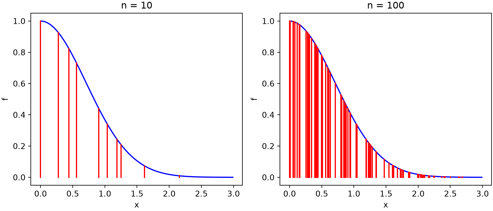
# Monte Carlo integration by uniform sampling
def mc_integration(f, x1, x2, n):
x = np.random.uniform(x1, x2, n)
return np.sum(f(x)) * (x2 - x1) / n
np.random.seed(1)
print(mc_integration(f1, 0, 3, 10**4))0.8906676126456481Both estimates land near \(\sqrt{\pi}/2 \approx 0.886\). The midpoint rule is more accurate for a smooth one-dimensional integrand like this one, but Monte Carlo integration has a decisive advantage in high dimensions, where its \(1/\sqrt{n}\) error is independent of the number of dimensions while grid-based rules become prohibitive.
Nothing forces the samples to be uniform. We can draw \(x\) from any distribution \(p(x)\) by rewriting the integral as
\[ I = \int_{x_1}^{x_2} f(x)\, dx = \int_{x_1}^{x_2} \frac{f(x)}{p(x)}\, p(x)\, dx , \tag{10} \]
and estimating it by sampling from \(p\),
\[ I \approx \frac{1}{n} \sum_{i=1}^n \frac{f(x_i)}{p(x_i)} . \tag{11} \]
This is importance sampling (Robert and Casella 2004). Choosing a \(p(x)\) that is large where \(f(x)\) is large concentrates the samples where they matter and improves convergence. For \(f(x) = e^{-x^2}\) we sample from the exponential density \(p(x) = e^{-x}\) on \([0, \infty)\), drawing \(x\) by the inverse-transform method (\(x = -\ln u\) with \(u\) uniform). This lets us cover a much wider range of \(x\) than uniform sampling would afford.
Objective. Reduce the variance of a Monte Carlo integral with importance sampling.
Model. The same integral of f(x) = exp(-x^2), rewritten as I = integral of f(x)/p(x) * p(x) dx and estimated by the mean of f(x_i)/p(x_i) with x_i drawn from p.
Method. Monte Carlo importance sampling with an exponential density p(x) = exp(-x) (drawn by inverse transform), compared against uniform Monte Carlo.
Test. Range [0, 100], n = 1e4, 100 replicates each of importance and uniform sampling; seed 1.
Show. Box plots of the importance-sampling versus uniform estimates over many replicates.
Verification. Over the wide range, uniform sampling scatters badly by wasting points where f is negligible, while importance sampling concentrates points where f is large and converges with far less variance.
# samples now cluster at small x, where f is largest
set.seed(1)
xall <- seq(0, 3, by = 0.01)
u <- runif(100, exp(-3), exp(0))
x_exp <- -log(u)
plot(xall, f1(xall), type = "l", xlab = "x", ylab = "f", main = "n = 100")
for (x in x_exp) segments(x, 0, x, f1(x), col = 2)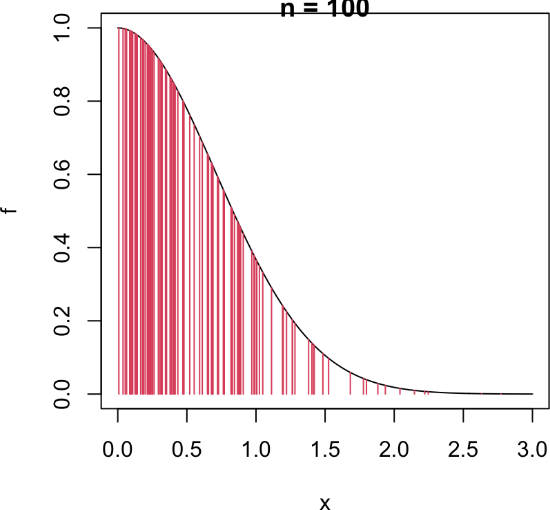
# importance sampling with p(x) = exp(-x)
mc_integration_importance_exp <- function(f, x1, x2, n) {
u <- runif(n, exp(-x2), exp(-x1))
x <- -log(u) # exponential samples
sum(f(x) / exp(-x)) / n # f(x) / p(x), averaged
}
set.seed(1)
mc_integration_importance_exp(f1, 0, 100, 10^4)[1] 0.8828597# importance sampling converges far faster over a wide range
set.seed(1)
imp <- replicate(100, mc_integration_importance_exp(f1, 0, 100, 10^4))
uni <- replicate(100, mc_integration(f1, 0, 100, 10^4))
boxplot(data.frame(mc_importance = imp, mc = uni))
abline(h = sqrt(pi) / 2, col = 2, lty = 3)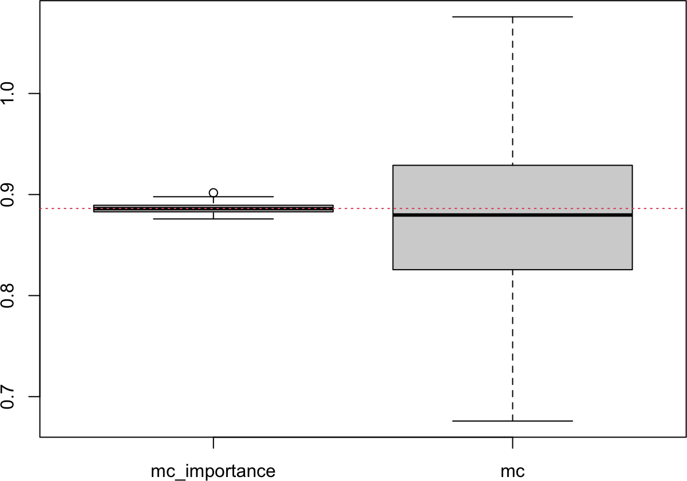
# samples now cluster at small x, where f is largest
np.random.seed(1)
xall = np.arange(0, 3, 0.01)
u = np.random.uniform(np.exp(-3), np.exp(0), 100)
x_exp = -np.log(u)
plt.plot(xall, f1(xall), color="blue")
for x in x_exp:
plt.plot([x, x], [0, f1(x)], color="red")
plt.xlabel("x"); plt.ylabel("f"); plt.title("n = 100"); plt.show()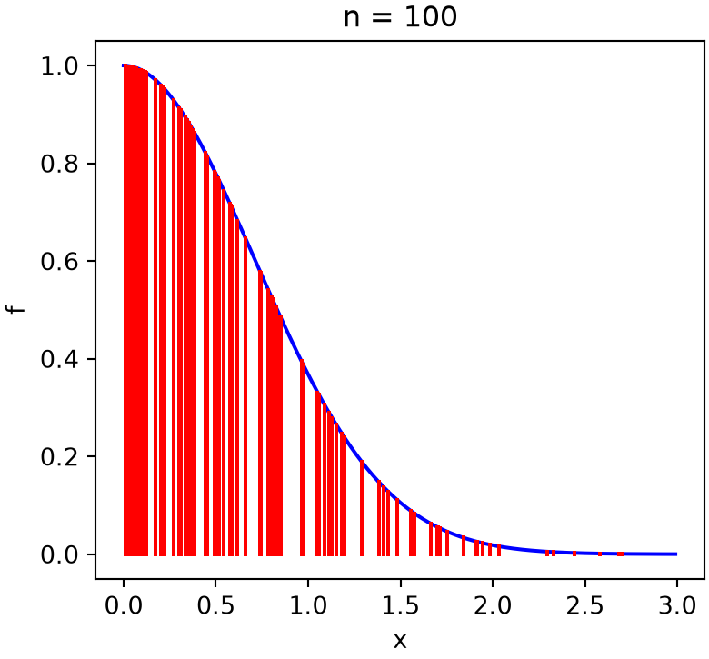
# importance sampling with p(x) = exp(-x)
def mc_integration_importance_exp(f, x1, x2, n):
u = np.random.uniform(np.exp(-x2), np.exp(-x1), n)
x = -np.log(u) # exponential samples
return np.sum(f(x) / np.exp(-x)) / n # f(x) / p(x), averaged
np.random.seed(1)
print(mc_integration_importance_exp(f1, 0, 100, 10**4))0.8851360731695745# importance sampling converges far faster over a wide range
np.random.seed(1)
imp = [mc_integration_importance_exp(f1, 0, 100, 10**4) for _ in range(100)]
uni = [mc_integration(f1, 0, 100, 10**4) for _ in range(100)]
plt.boxplot([imp, uni], tick_labels=["MC importance", "MC"]){'whiskers': [<matplotlib.lines.Line2D object at 0x1163ea660>, <matplotlib.lines.Line2D object at 0x1163ea7b0>, <matplotlib.lines.Line2D object at 0x1163eaf90>, <matplotlib.lines.Line2D object at 0x1163eb0e0>], 'caps': [<matplotlib.lines.Line2D object at 0x1163ea900>, <matplotlib.lines.Line2D object at 0x1163eaa50>, <matplotlib.lines.Line2D object at 0x1163eb230>, <matplotlib.lines.Line2D object at 0x1163eb380>], 'boxes': [<matplotlib.lines.Line2D object at 0x1163ea510>, <matplotlib.lines.Line2D object at 0x1163eae40>], 'medians': [<matplotlib.lines.Line2D object at 0x1163eaba0>, <matplotlib.lines.Line2D object at 0x1163eb4d0>], 'fliers': [<matplotlib.lines.Line2D object at 0x1163eacf0>, <matplotlib.lines.Line2D object at 0x1163eb620>], 'means': []}plt.axhline(np.sqrt(np.pi) / 2, color="red", linestyle=":"); plt.show()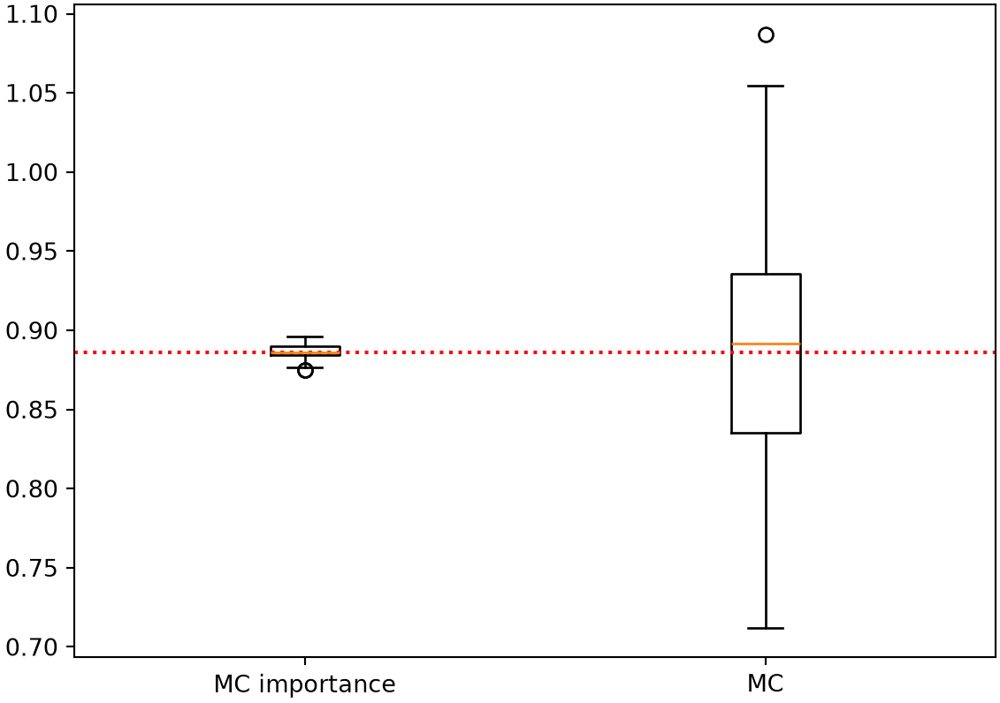
Over the wide range \(x \in (0, 100)\), uniform sampling wastes almost all of its points where \(f\) is negligible, so its estimate is badly scattered. Importance sampling puts the points where \(f\) is large and converges to \(\sqrt{\pi}/2\) with far less variance, as the boxplots show.
The Monte Carlo error falls off as \(1/\sqrt{n}\). Design an experiment to confirm this scaling: estimate one of the integrals above many times at each of several sample sizes \(n\), compute the standard deviation of the estimates at each \(n\), and check that it decreases like \(n^{-1/2}\) (for example, that a log-log plot of the error against \(n\) has slope \(-1/2\)).